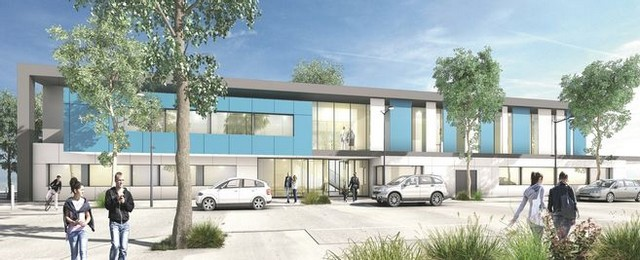
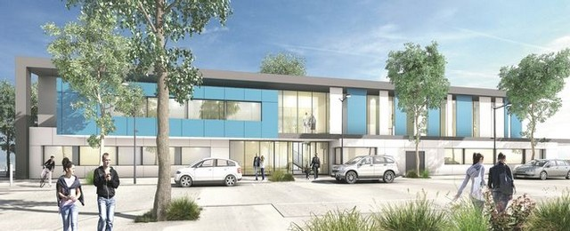

MAISON DE SANTE VAL DROUETTE
 

Présentation de la Maison de santé pluridisciplinaire
La maison de santé pluridisciplinaire d'Epernon s'est construite a proximité de la gare pour en faciliter l'accès. Elle accueille dix professionnels de santé : 4 médecins généraliste, , 2 chirurgiens dentiste, 1 diététicienne nutritionniste, 1 ergothérapheute, 1 masseur-kinésithérapeute et 1 pédicure-podologue. Un parking réservé à la patientèle de la maison de santé se situe à proximité. Les professionnels sont regroupés au sein d'une SISA (société interprofessionnelle de soins ambulatoires) dont le but et d'améliorer la prise en charge des patients dans un processus pluridisciplinaire…
La structure multipraticiens a une surface de 1.000 m² reparties sur deux étages. Il abrite un pôle médical et dentaire de huit salles. Un pôle paramédical accueille les professionnels n'étant pas "professionnels de santé" au regard des textes.
Le coût total de la construction s’élève à 3,2 millions d’euros hors taxes. le financement a été pris en charge par la ville d'Epernon,la communauté de communes des Portes Euréliennes d’Ile-de-France , le département , la Région, et de l’État.